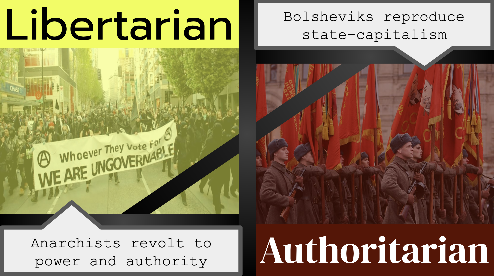

Bakuningrad the dream city
My birthplace, the Bakuningrad is a den of we Bakunin-ists.
That exists at cities that's took hegemony by us! We have to
understand that city is "imagined community" too because
historically, rulers of the city gave that, a name they want
and make people call the name.
And conversely, we can create imagined community
consciously, and take hegemony (context like a theory of
Antonio Gramsci). If we success to take hegemony, It's
allowed to famous cities such as Tokyo, New York or Moscow,
called "Bakuningrad" like we want! Let's go to battlefield
of ideological struggle, and its war of position!
What's next era of the MODERN?
The surmount of modern, that is difficult main theme of my
and many orthodox socialists' thoughts. I can say modern is
progressive and free era by comparison with medieval
feudalism or ancient empire, but we shall not stop at
modern. We have to defeat national-state, capitalism and
patriarchy, these social structure that let people be
alienation. Karl Marx images "Free association of producers"
that will be alternative while critique of capitalism. I
very agree that clear vision.
But I think political revolution and proletarian
dictatorship is too authoritarian strategy. In fact,
Soviet-Russia that's born by people's spontaneous but
corrupt to state-capitalism with Bolsheviks. I'm oriented to
economical revolution like Proudhon. I think the economical
revolution needs technical methods like a P2P I'm working,
to reform means of production and to establish a new society
that's based on mutual aid by free will of each individuals.
The practice of design Russian avant-garde arts
I created propaganda poster that imitate Russian avant-garde
technique. The fascinating points of Russian avant-garde
arts is daring color usage and powerful composition. I love
it and try to learn from it to create my poster.

This poster contrasts Libertarian vs Authoritarian
in the Leftist movement, or to say clearly
allelomorphism of between Anarchists and Bolsheviks.
Left light and yellow panel shows libertarian people
who are demonstrating their principles on the
streets. Right dark and red panel shows
authoritarian people who are soldiers, have many
flags of Lenin. And front green stamps that's wrote
"uncensored", means this poster is outside of
statists' watching.